The slide of the lecture is on the left, the same figure on the right, computed in the browser from the same data. The ▶ button moves the parameter step by step.
When Do Markets Move Together? · Measuring Covariance and Its Uncertainty · Multivariate GARCH and DCC · Crisis Correlations and the Forbes–Rigobon Bias · Copulas and Tail Dependence · Applications: Europe, Romania and Banks · Case Studies: Global Common Volatility and DCC in Vast Dimensions · AI for Scientific Discovery
When Do Markets Move Together?
Stocks and Bonds: A Correlation That Changed Sign
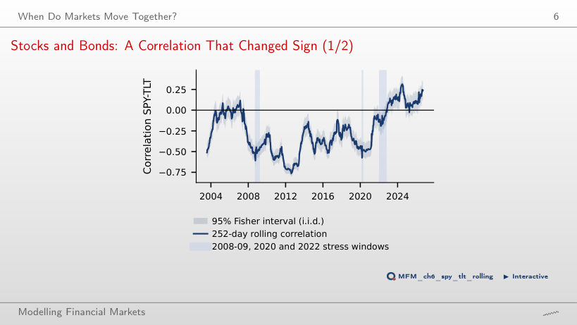
Answer
It raises it: the covariance term of portfolio variance is 2w₁w₂σ₁σ₂ρ, so with positive weights it increases with ρ. On the 252-day window the correlation was positive on 6% of the days before 2022 and on 81% of the days from January 2022, so bonds offset less of the equity losses. The explanation discussed in the lecture: growth shocks move stocks and bonds in opposite directions, inflation shocks move them in the same direction. The chart documents the change in correlation; by itself it does not identify the shock behind it.
Measuring Covariance and Its Uncertainty
Daily, 2-Day and Weekly Correlations, 2000–2026
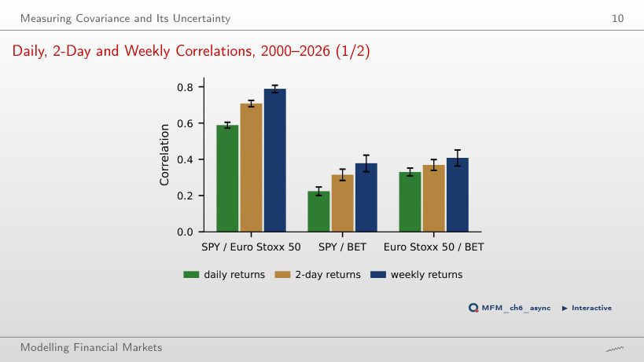
Answer
Euro-area exchanges close before New York, so US news released after the European close enters European prices only the next day. The same-day correlation is biased towards zero, and the lagged correlation (SPY yesterday, Euro Stoxx 50 today) is 0.20. Over longer horizons the one-day lag matters less and less.
Fisher versus HAC Intervals: SPY and TLT
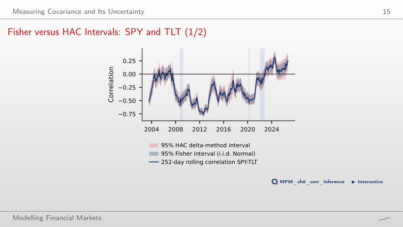
Answer
No. On the 252-day window, the median ratio of the HAC width to the Fisher width is 1.17 at L = 0, 1.24 at L = 4 and 1.39 at L = 20. The Fisher formula assumes i.i.d. pairs from the bivariate Normal distribution; L = 0 removes only the lagged terms, not the fourth moments in the standard error. Over 2002–2021 the standard error of the correlation is 0.0120 by Fisher and 0.0217 without lags. With L = 4, the conclusion of the test changes in 8.2% of the windows. The HAC interval itself needs finite fourth moments, which Chapter 1 puts in doubt: HAC handles the dependence but does not compensate for missing moments.
EWMA versus Rolling Windows, SPY–TLT since 2019
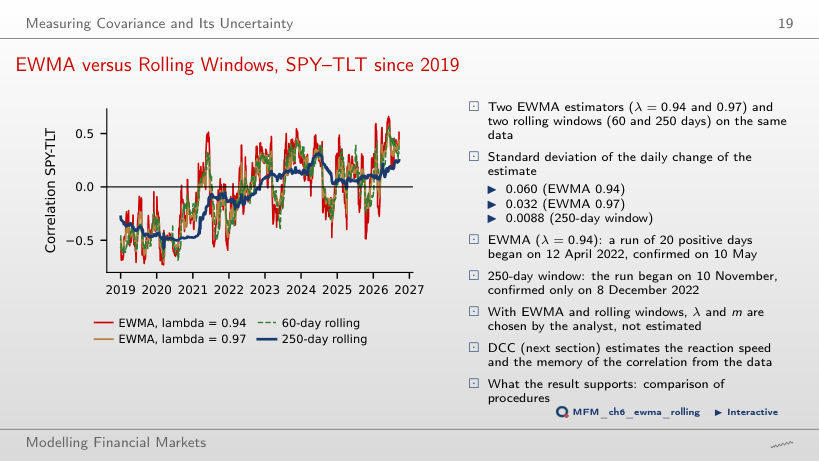
Answer
Later: the 20th consecutive day of positive correlation is 10 May 2022 at λ = 0.94 (the run begins on 12 April) and 9 December 2022 at λ = 0.995, after the 250-day window (8 December). The weight on the most recent return product is 1 − λ: 6% at λ = 0.94 and 0.5% at λ = 0.995; the half-life of the weights rises from 11.2 to 138.3 days. Speed has a price: the standard deviation of the daily change of the correlation is 0.060 at λ = 0.94, 0.007 at λ = 0.995 and 0.0088 for the 250-day window.
Multivariate GARCH and DCC
DCC Correlation of SPY and TLT, 2002–2026
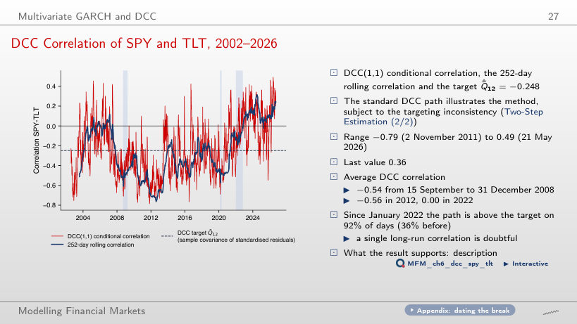
Answer
It is the persistence of the correlation: a + b = 0.986; the heuristic measure ln 0.5 / ln(a + b) gives about 48 days, not the exact half-life of Q_t, since E_t[ε_{t+1}ε_{t+1}′] = R_{t+1}, not Q_{t+1}. The LR test against constant correlation gives 533.4; the bootstrap under CCC gives p = 0.005, the smallest possible value with B = 199. These are standard DCC estimates, an illustration of the method: with correlation targeting they are inconsistent in general.
Application: Minimum-Variance Weights with DCC
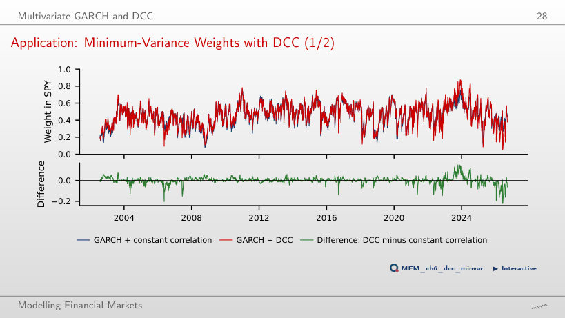
Answer
Nothing, from this comparison alone. The difference is about 0.04 percentage points of annualised volatility, and the parameters are estimated on the full sample: the result is neither an out-of-sample evaluation nor an equivalence test. The fixed 60/40 portfolio has 10.99%, so most of the gain comes from the GARCH volatilities. The DCC weights differ from the constant-correlation weights by 1.9 percentage points on average and by at most 22 (8 June 2026). ▶ changes the constant correlation: at 0.90 the constant-correlation volatility rises to 12.73%.
Crisis Correlations and the Forbes–Rigobon Bias
How Much Can Volatility Alone Raise a Correlation?
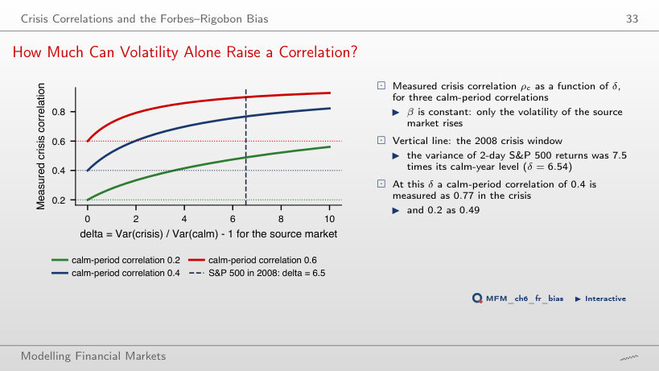
Answer
It keeps rising, ever more slowly: 0.82 at δ = 10. From ρ_c = ρ√((1 + δ)/(1 + δρ²)), the measured correlation approaches 1 only as δ → ∞. The higher variance of the source market raises the share of the common factor in the variance of the target market, although the transmission coefficient β and the variance of the idiosyncratic shock stay the same. At δ = 6.54, an unconditional correlation of 0.2 is measured as 0.49.
2008: Raw versus Adjusted Crisis Correlations
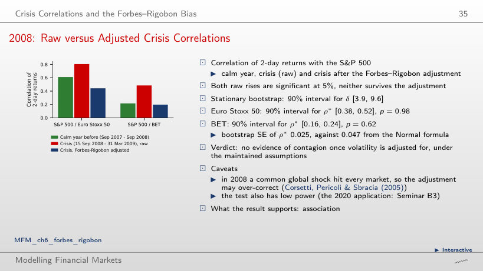
Answer
We find no evidence of contagion, under the model’s assumptions: we do not reject the hypothesis that the adjusted correlation did not rise. The correlation is 0.61 in the calm year, 0.80 in the crisis (the raw rise has p = 0.005) and 0.44 after the adjustment. p = 0.93 comes from the one-sided Fisher z test computed on the page; the lecture’s stationary bootstrap gives p = 0.98. A large p-value is not the probability of the null hypothesis and does not prove the absence of contagion. For the BET, 0.48 becomes 0.20 (p = 0.55). The numbers change when the windows are shifted (▶), so their choice has to be justified.
Copulas and Tail Dependence
Exceedance Correlations: S&P 500 and Euro Stoxx 50
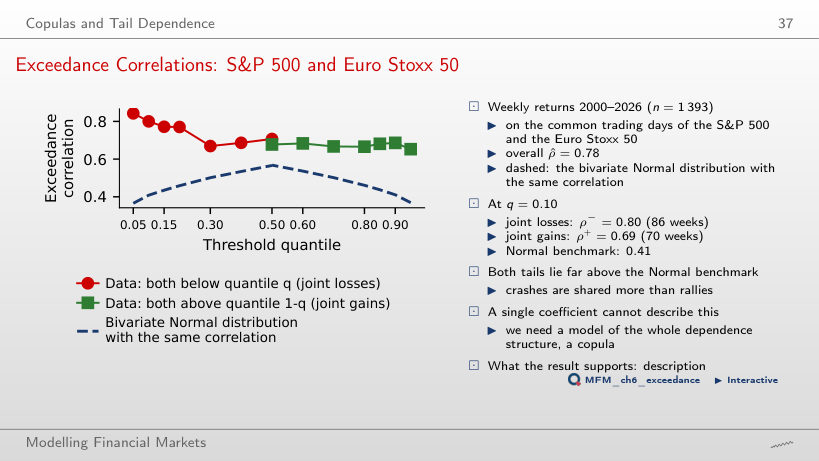
Answer
The Pearson correlation of weekly returns, computed only over the 86 weeks in which both returns are below their own 10% quantile. It is neither a conditional probability nor a tail-dependence limit. For joint gains the correlation is 0.69 (70 weeks). The bivariate Normal distribution with the unconditional correlation 0.78 gives only 0.41 for the same selection.
Five Copulas with the Same Kendall's Tau
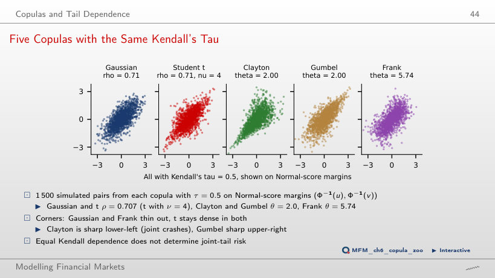
Answer
They have positive probability: under the Gaussian copula P(U ≤ 0.05, V ≤ 0.05) ≈ 0.020, eight times the 0.0025 under independence, and C(q, q)/q ≈ 0.40 at q = 0.05. λ_L = 0 only says that C(q, q)/q → 0 as q → 0. The same τ does not fix the tails: the t copula with ν = 4 has λ_L = λ_U = 0.40, Clayton has λ_L = 0.71, Gumbel only λ_U = 0.59, and the Gaussian and Frank copulas have λ = 0. When ▶ raises τ to 0.9, the Gaussian λ stays 0.
From Residuals to Pseudo-Observations: JPM and BAC
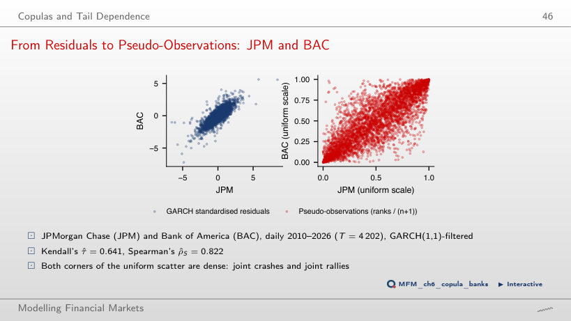
Answer
Empirical margins on the uniform grid 1/(T + 1), …, T/(T + 1), without choosing a marginal distribution. Ranks preserve the order of the observations; they produce neither the Normal distribution nor independence over time. The GARCH filter reduces volatility clustering, and the static CML inference used here assumes i.i.d. innovations, so the adequacy of the filtering has to be checked. Rank measures do not depend on the margins: for JPM and BAC, τ = 0.641 and ρ_S = 0.822.
Copula Estimates and Goodness of Fit: JPM and BAC
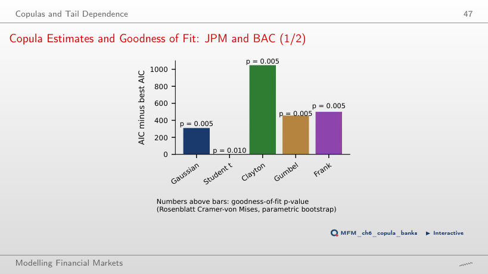
Answer
It is the AIC-preferred family among those tested, with adequacy rejected. AIC ranks the families; it does not validate a model: the t copula has an AIC 309 points below the Gaussian copula and the smallest Rosenblatt statistic, 0.082. The test rejects all five, with the smallest possible p-value: 1/101 ≈ 0.010 for t (B = 100) and 1/201 ≈ 0.005 for the others (B = 200). The second-ranked family is not adequate either. As ν grows (▶), the t copula approaches the Gaussian one and its AIC advantage shrinks to 94 points at ν = 40.
Empirical Tail Dependence: JPM and BAC
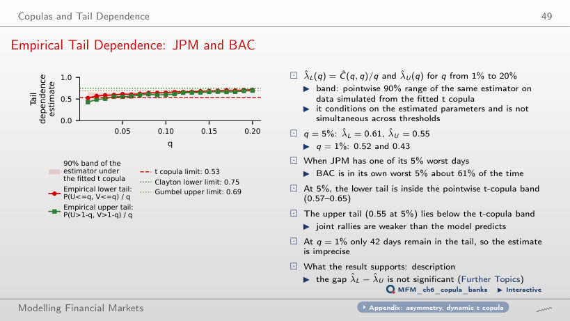
Answer
Not yet: the difference, 0.062, has the 95% block-bootstrap interval [−0.014; 0.138], which contains zero, so the asymmetry is not detected statistically at this threshold. The band [0.57; 0.65] is a pointwise 90% band simulated under the fitted t copula with its parameters held fixed; it compares each tail with the model, not the tails with each other. When JPM is in the lower tail of the residuals (210 days), BAC is in its own lower tail on 129 of them.
Applications: Europe, Romania and Banks
US, Euro-Area and Romanian Equities, 2000–2026
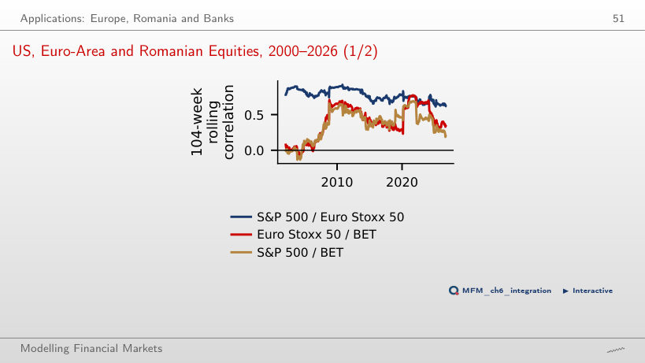
Answer
No. 0.61 is the correlation computed from all weekly returns since the start of 2020; 0.34 uses only the latest 104 weeks, up to September 2026. By subperiod, the correlation rises from 0.33 (2000–2009) to 0.45 (2010–2019) and 0.61 (from 2020). On the rolling window it jumps in crises (0.76 at the end of 2021) and falls back afterwards, so part of the rise may be the Forbes–Rigobon volatility bias. Neither number alone identifies a structural change in integration.
Banks: Correlations of Weekly Returns, 2010–2026
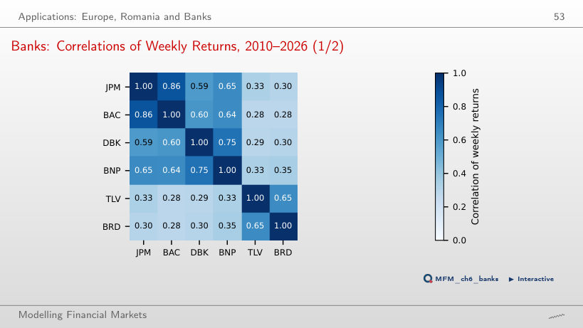
Answer
The heatmap shows association, not cause. Over 871 weeks (2010–2026), correlations are high within regions (JPM–BAC 0.86, DBK–BNP 0.75, TLV–BRD 0.65) and low with the Romanian banks (BNP–TLV 0.33, JPM–BRD 0.30). Country factors (sovereign risk, domestic interest rates, regulation) are plausible explanations, but the matrix does not separate them. Low average correlations do not mean protection in crises: in March–June 2020 the average correlation between the Romanian banks and the others rose to 0.56 (next block).
Bank Correlations over Time
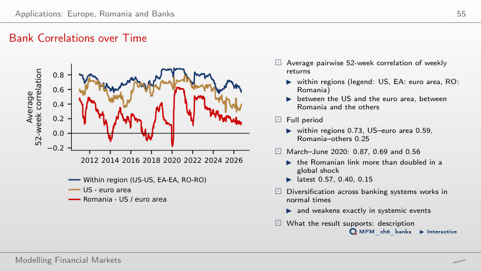
Answer
Observations from before March 2020 as well. Each point of the series is the mean of the eight Romania–US/euro-area correlations computed over the latest 52 weeks up to that date, so the windows of March–June 2020 start in the spring of 2019. The series averages 0.56 in March–June 2020 and 0.25 over the whole period, i.e. less than half: diversification across banking systems weakens in global shocks. ▶ lengthens the window: at 154 weeks the March–June 2020 value falls to 0.34, because the window contains more calm weeks.
A Correlation Network of Banks
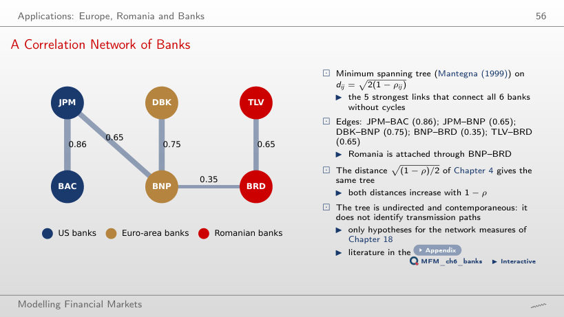
Answer
No. The algorithm sorts the distances d = √(2(1 − ρ)) and rejects edges that close a cycle. The fifth-largest correlation, BAC–BNP (0.64), closes the cycle JPM–BAC–BNP and is rejected; Romania is connected through BNP–BRD (0.35). The edges of the tree: JPM–BAC (0.86), DBK–BNP (0.75), JPM–BNP (0.65), TLV–BRD (0.65) and BNP–BRD (0.35). The tree is undirected and contemporaneous, so it does not show the direction of transmission.
Case Studies: Global Common Volatility and DCC in Vast Dimensions
DCC Estimates as the Number of Assets Grows
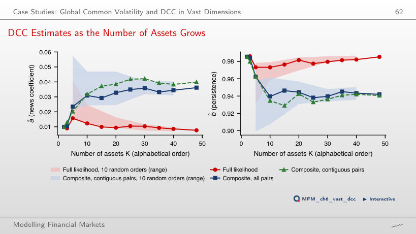
Answer
Each CL term uses only a 2 × 2 block of the target. The target Q̄ has K(K − 1)/2 correlations estimated before (a, b), i.e. 1,128 at K = 48, and the full likelihood uses the whole matrix with all its errors. The CL pairs are not independent samples: the bivariate terms are computed from the same data. The estimates do not move monotonically: the full-likelihood â is 0.0099 at K = 2, 0.0157 at K = 5 and 0.0077 at K = 48, while the all-pairs CL â rises to 0.0362. With the full-likelihood estimates the mean correlation of the 48 assets has a standard deviation over time of 0.034, against 0.058 with CL, and the heuristic persistence measure ln 0.5 / ln(a + b) is 99 days, against 31. The difference is consistent with the mechanism above, but the data alone do not show which estimate is closer to the truth. The simulations of Pakel, Shephard, Sheppard and Engle (2021), for scalar BEKK and cDCC, support the advantage of CL in the models and settings they study; they do not show the absence of bias in this adaptation on the standard DCC.
AI for Scientific Discovery
Mini-Case: Does Inflation Drive the Stock–Bond Correlation?
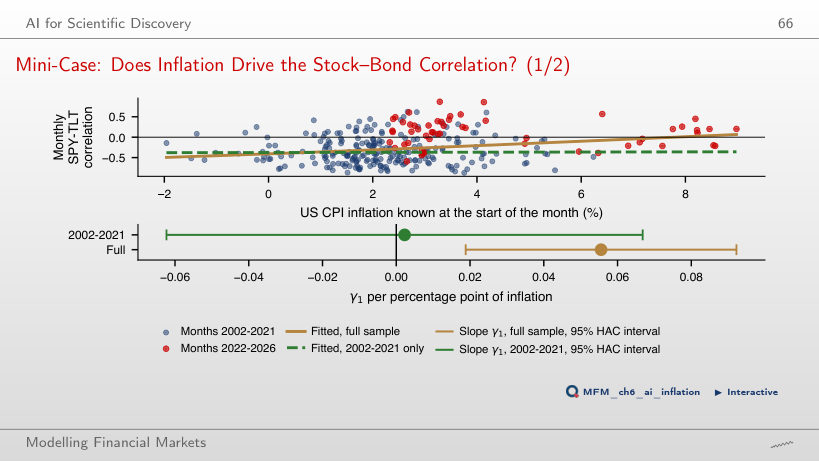
Answer
No. The dependent variable is z = artanh(ρ). Over the full sample the slope is 0.056 z units per percentage point of inflation (t = 2.97). Over 2002–2021 it is 0.002 (t = 0.07), with the 95% HAC interval [−0.062; 0.067], which also contains the full-sample slope: the estimate is imprecise, so insignificance does not prove a zero effect. A difference in significance is not a test of the difference between slopes. A single change of regime cannot separate the level of inflation from the monetary-policy regime.
EODHD daily prices: SPY, TLT, S&P 500, Euro Stoxx 50, BET and the shares of JPMorgan Chase, Bank of America, Deutsche Bank, BNP Paribas, Banca Transilvania and BRD; for the second case study, the 48 US-listed stocks and ETFs of the course data with a complete history from July 2013. US CPI inflation: U.S. Bureau of Labor Statistics, via FRED.